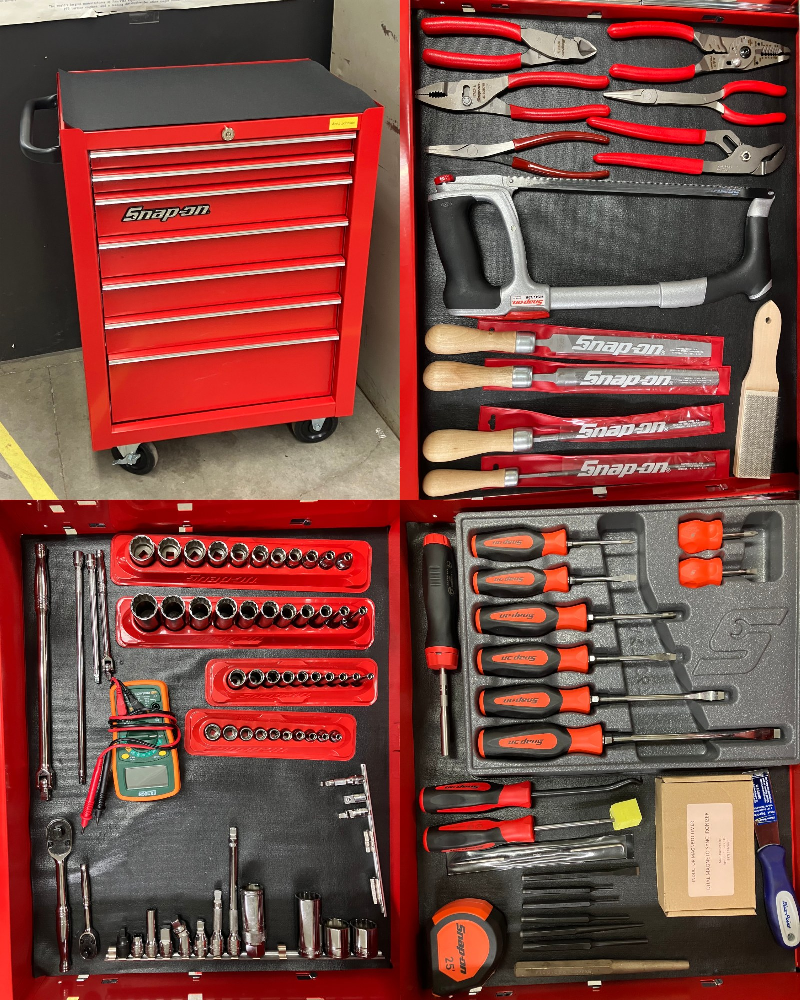
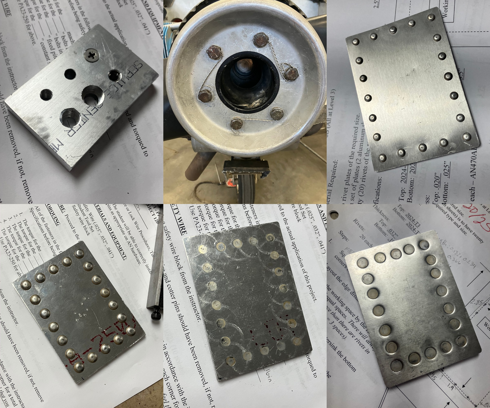

September Update
This month, I've been settling in to taking classes, studying, and figuring out how I can fit events into my schedule. It's getting easier, and I've been having a lot of fun outside of classes! I've also been learning a lot inside those classes — my brain is already full, and I've got 3.5 more semesters to go :)
My first class of the day is supposed to be about physics for airplanes, but we have been learning the line crew aspects during that time slot. Things like starting engines, hand propping engines, checking engines, and fueling aircraft. We started a Cessna 310, the first multi engine plane I've ever been in the pilot's seat of! (The wet rate for a single engine is about $160 an hour, but for multi it's more like $270 an hour.) It was super interesting how different and also how similar a multi is to a single engine. The switches are mostly the same, there are just two of each! Unfortunately, we never actually started a plane by hand propping — we only practiced on an engine with the spark plugs taken out so it wouldn't fire and hurt one of us. I wish we had, but I think I still learned enough to do it if I need to. We've started our math unit, which introduces the most basic math needed to start the physics unit. It's pretty boring, but hopefully the physics will make up for it.
My second class of the day switches between Electricity and Regulations, two very different topics. In Electricity (my least favorite class), we are learning about circuits and how to use the multimeter to find problems within them. They have a huge mockup of what a basic airplane electrical system might look like, with light switches and a DC-AC inverter, whatever that means. While I feel pretty lost, I am learning a lot — hopefully enough to have a good understanding of the airplane. The Regulations class is very straightforward — I've learned a lot of the regs from going through the private pilots FAR/AIM before my checkride.
In my third class of the day, we talk about (and use) tools! My toolbox FINALLY came, and I love how all the tools can be arranged neatly. :) Grand total: $5,859.51 :( (I also have all seven of my textbooks now, and they take up half of my bookshelf. Between buying used and Amazon gift cards, I spent $124.54, which is much better than the $300 that I thought I was going to have to spend!) We did a drilling and tapping project to learn how to use the drill press, hacksaws, and various taps that we might need in the future. Right now we are working on safety wire and torquing. My first attempts have been far from perfect, but I'm making progress!

My last class of the day is when we talk about airframes, specifically sheet metal. Right now we are learning how to rivet! This also includes calculating spacing and length, cutting, filing, drilling, and deburring the aluminum, and actually driving in the rivets. We did forty round-head rivets and sixty countersunk (flush) rivets. Mine were pretty sloppy, but I got passing grades on all of them! :) I had taken a class last year at Meadow Lake Airport where we built the wings of an RV12, and I'm realizing that class prepared me incredibly well for what we are doing now. Even so, I had to start my first project over completely when the rivet gun slipped and bent the metal. :(

On one Saturday this month, I played guitar for a little Adventist church about 30 minutes away. A friend of mine came along also to sing, and there were some other Andrews students who played piano and trumpet. The church was very small, about 20ish people, and all the songs we played were hymns, which was really hard because I'm used to contemporary music. However, it was fun and I got free food afterwards. :) I don't know if I'll play there again — I would have to practice more first.
The school has one day every year called Change Day, where we are encouraged to choose from several volunteering opportunities to help out the surrounding communities (and to earn credits). I chose to help out with the thrift store that I like to shop at — we organized clothes and went through donated items to make sure they were good enough to sell. It was a good experience, but I think next Change Day I would do something like painting a church, because when I went on a mission trip to Mexico that was my favorite part.
I also volunteered last Sunday for a Pancake Fly-in put on by Andrews University! It was way bigger than I thought it was going to be! There was a car show happening at the same time, and the line of people went out the door of the hangar! I took care of the drinks/syrup/applesauce tables, making coffee and refilling the empty bottles. Because the president of the school is very conservative, the coffee was all decaf, or as one volunteer put it, "unleaded only" :)
After the Fly-in, a friend of mine invited me to ride along in the back of the plane for one of his lessons! It was a lot of fun to see how the flight program at Andrews operates — fuel, preflight procedures, etc. We flew over the Lake Michigan coastline, something I've wanted to do as soon as I got here. It was a lot of fun, and I was super impressed with my friend's airwork. He's already got permission to solo at 16ish hours, and he's ready for it!
I'm looking forward to when I can start flight training, but until then, I'll keep working on getting my private done. I am going to take a discovery flight this weekend and start connecting with instructors at a nearby-ish flight school. If everything works out, I will take a few catch-up lessons and then schedule a checkride!